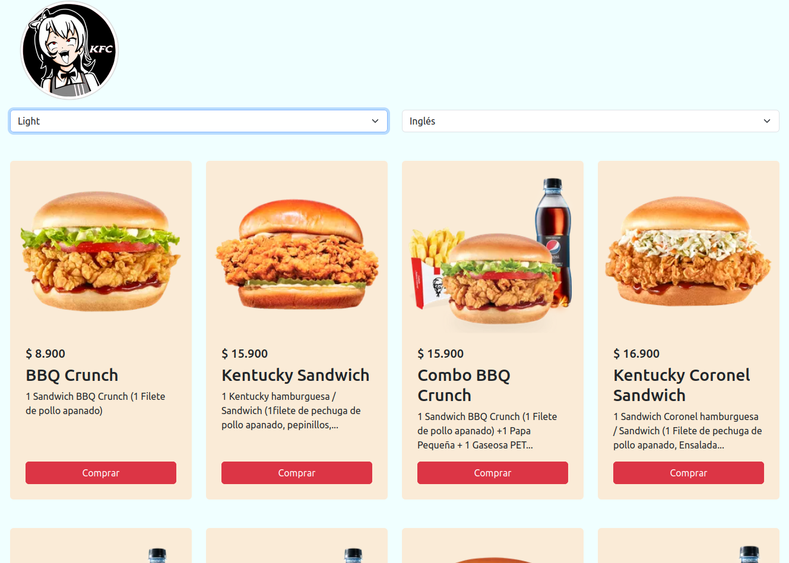
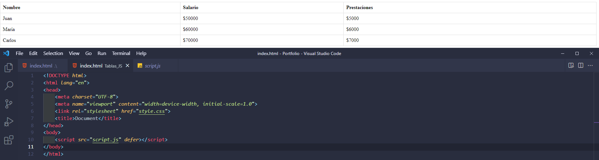
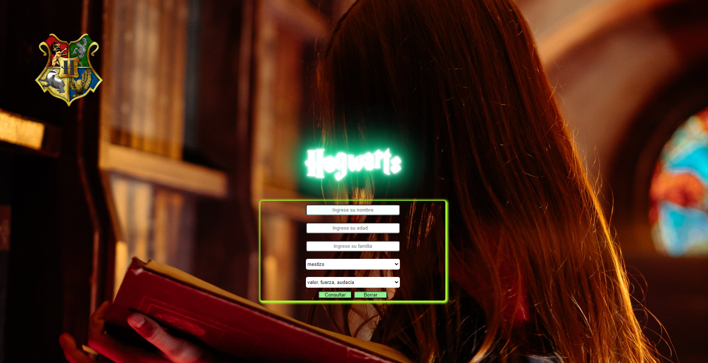
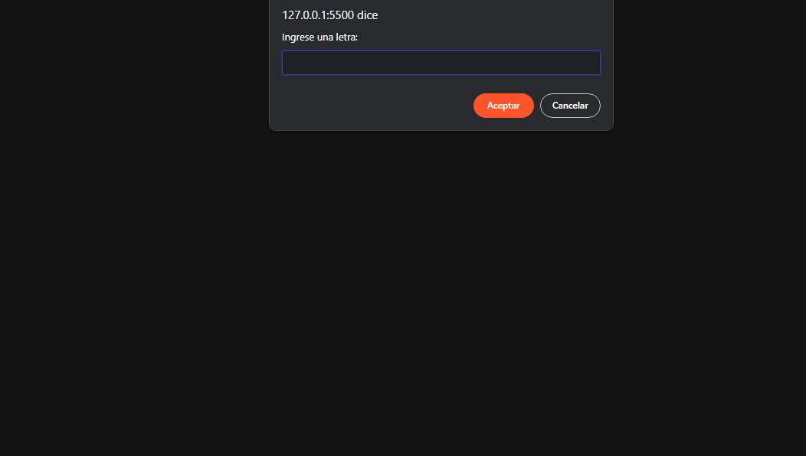

Mi Portafolio

Página de Hamburguesas
De manera visual se implementa la página de la francia KFC con el fin de practicar local storage, session storage, bootrsap para las cartas, seguridad de las páginas web, persistencia de configuraciones como los modos de color de la página y el cambio de idioma a Inglés manualmente utilizando DOM

Login de Usuarios
Se crea desde cero un login que tenga seguridad con localstorage persistoendo si esta logeado y dependiendo su tipo de sexo se le indica el nombre del usuario haciendo que toda la página se adapte al mismo ya sea cambiando, el tipo de letra y el avatar que aparece por defecto

Tabla solo con JavaScript
Se implementa solamente un script que esta conectado con un JavaScript y de manera manual se crean la tabla tanto sus filas y sus columnas

Hogwarts
Se recrea de las películas de la franquicia Harry Potter la academía de magía hogwarts en donde al igual que un juego podras interactuar como si fueras un estudiante siendo posible por la magia de JavaScript en la cual podemos tomar decisiones, pelear contra dementores, hacer encantamientos y disfrutar de todo los que nos depara la academía según tu casa escogida por el sombrero mágico

CRUD con Fetch
Se crea de manera manual un crud completo con todas las opciones que este conlleva todo desde una base ya creada con anterioridad y utilizando postman para hacer testeos de manera que podamos identificar como funciona internamente una llamada fetch haciendo uso de las diferentes sentencias

CRUD con Fetch
Con los diferentes métodos de javascript para trabajar con arreglos y utilizando solamente javascript creamos por consola el juego del ahorcado en donde tendras 5 vidas para adivinar la palabra que se muestra en la consola